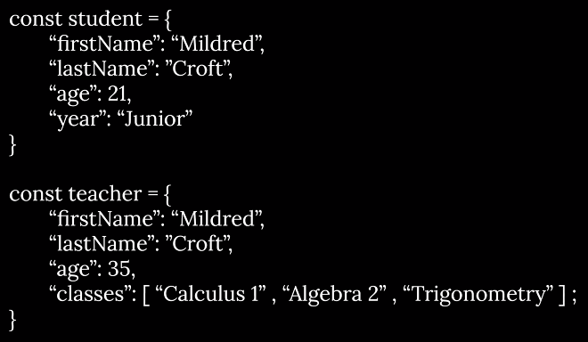

Using javascript objects
NOTE: there's a stray semicolon at the end of the classes line This is how to declare it
a more general object
it's like a category of objects vs a single object
it's like a template for objects
it uses the same properties
seeing a car as a car vs parts of a car
the thing that we act on, the data we do to it, live in the same place. You can put a question in the same place that stores the data.
Lots of different templates to make lots of differnt cats
recycling structures